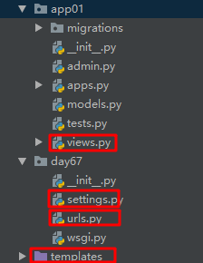

原文出处:本文由博客园博主我是渣渣聪提供。
原文连接:https://www.cnblogs.com/missdx/p/11232771.html
原文连接:https://www.cnblogs.com/missdx/p/11232771.html
用Pycharm创建一个django项目。目录如下：



1 <!DOCTYPE html>
2 <html lang="en">
3 <head>
4 <meta charset="UTF-8">
5 <title>upload</title>
6 </head>
7 <body>
8 {# 上传文件的form表单必须要加上enctype="multipart/form-data" #}
9 <form action="/upload/" method="post" enctype="multipart/form-data">
10 <input type="file" name="upload_files">
11 <input type="submit" value="提交">
12 </form>
13 </body>
14 </html> 1 from django.shortcuts import render,HttpResponse
2
3 # Create your views here.
4
5 # CBV方式（class base views）
6 from django.views import View
7 class Upload(View):
8 def post(self,request):
9 '''
10 保存上传文件前，数据需要存放在某个位置。默认当上传文件小于2.5M时，django会将上传文件的全部内容读进内存。从内存读取一次，写磁盘一次。
11 但当上传文件很大时，django会把上传文件写到临时文件中，然后存放到系统临时文件夹中。
12 :param request:
13 :return:
14 '''
15 # 从请求的FILES中获取上传文件的文件名，file为页面上type=files类型input的name属性值
16 filename = request.FILES['upload_files'].name
17 # 在项目目录下新建一个文件
18 with open(filename,'wb') as f:
19 # 从上传的文件对象中一点一点读
20 for chunk in request.FILES['upload_files'].chunks():
21 # 写入本地文件
22 f.write(chunk)
23 return HttpResponse('上传ok')
24
25 def get(self,request):
26 return render(request, 'uploadFiles.html') 1 """day67 URL Configuration
2
3 The `urlpatterns` list routes URLs to views. For more information please see:
4 https://docs.djangoproject.com/en/2.2/topics/http/urls/
5 Examples:
6 Function views
7 1. Add an import: from my_app import views
8 2. Add a URL to urlpatterns: path('', views.home, name='home')
9 Class-based views
10 1. Add an import: from other_app.views import Home
11 2. Add a URL to urlpatterns: path('', Home.as_view(), name='home')
12 Including another URLconf
13 1. Import the include() function: from django.urls import include, path
14 2. Add a URL to urlpatterns: path('blog/', include('blog.urls'))
15 """
16 from django.contrib import admin
17 from django.urls import path
18 from app01 import views
19
20 urlpatterns = [
21 path('upload/',views.Upload.as_view() ),
22 ]注意settings.py中的这一行要注释掉
'django.middleware.csrf.CsrfViewMiddleware',点击运行，文件会上传到项目的根目录下面。